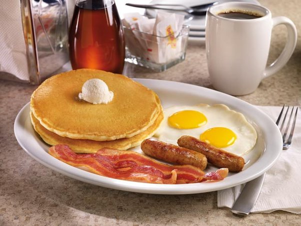
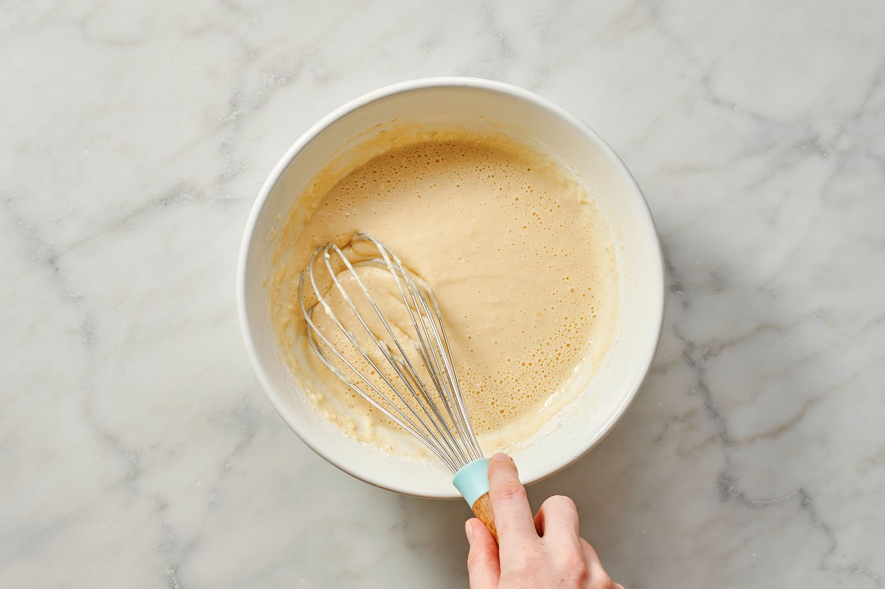

This is a simple Canadian breakfast with eggs, some kind
of meat like bacon or breakfast sausage, and pancakes. On this slide you will be able to see
the steps that has to be taken to make this delicous breakfast.

Starting off with Pancakes ingredient needed

Step 1: Mix all your dry ingredient together.

Step 2: In a seperate bowl mix all your wet ingredient together.
Step 3: Pour your wet ingredient to the dry ingridents.

Step 4: Mix your dry and wet ingredients together
Step 5: Add a small amount of butter in a medium heat pan for it to melt.

Step 6: Add your pancake mix in the medium heat pan.
Step 7: Flip the pancakes when you see bubbles forming, and once you flip them on the other side,
Use a spatula to check if it's good to take it out of the pan and repeat the process.
Next Eggs.
Step 1: Put cooking oil in the medium-heated pan, then crack the egg in the pan. Cook the egg longer for a crisp egg.
but if taken out of the pan fast, it will be a runnier egg.
Lastly Bacon and Canadian Sasuages
Step 1: Put your bacon and breakfast sausages in a medium-heated pan, depending on how
You like your bacon crispy cook it for 5-6 minutes or if you want your bacon soft cook it for 4-5 minutes,
and cook your breakfast sausages roughly for 5 minutes.